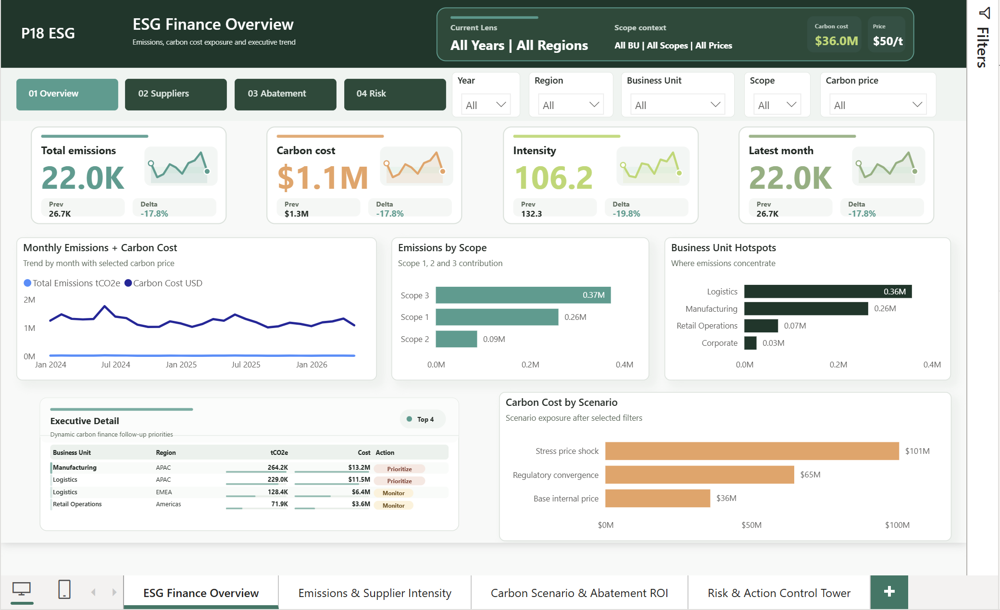

Which emissions and carbon-cost hotspots need CFO action under the selected region, BU, scope, and price lens?
Power BI ESG finance
ESG Carbon Finance
ESG finance decision dashboard linking emissions, supplier intensity, carbon cost exposure, abatement ROI, and owner governance. The v39 release uses four large KPI cards, top slicers, a header Current Lens, and dynamic TableEx cards that respond to slicers instead of static snapshot rows.

Interactive preview
Open full screen$36.0M carbon cost exposure, 719.5K tCO2e, scenario cost sensitivity, and abatement ROI are tied to owner action.
Dynamic table-card hashes were tested across six slicer states; validator gates now fail static table snapshots and scrollbar regressions.
This portfolio preview uses synthetic or anonymized data to demonstrate FP&A reporting logic without exposing company-confidential information.